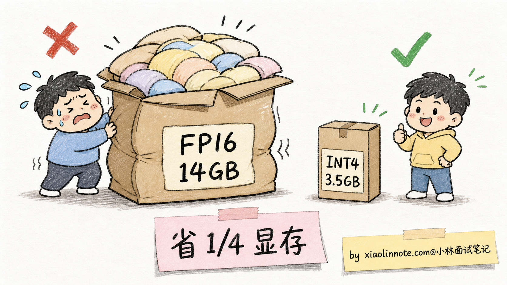
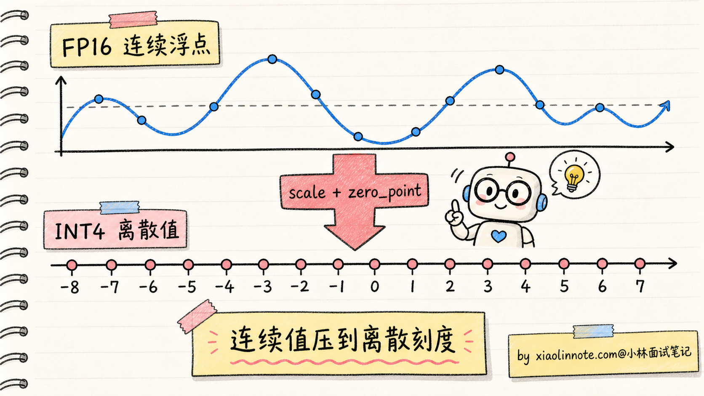
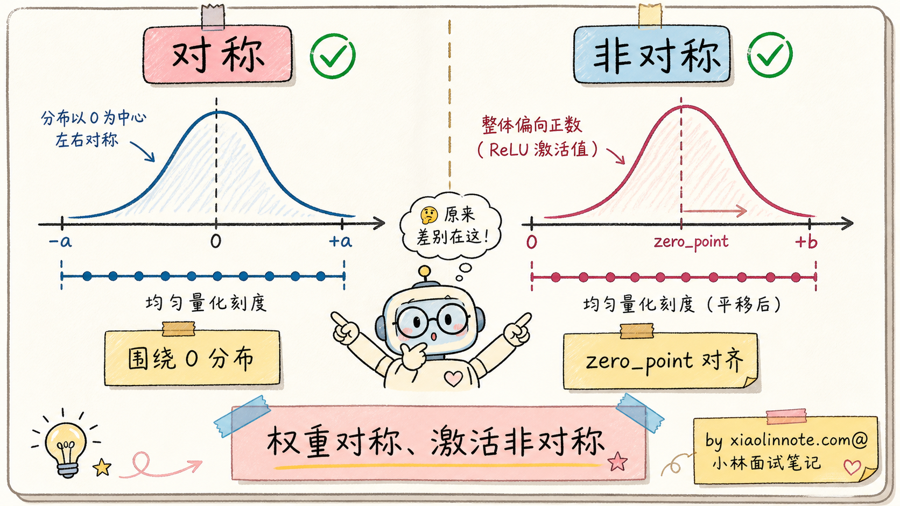
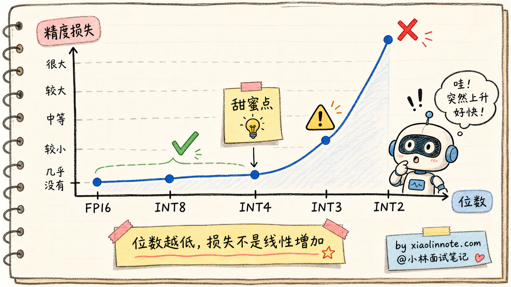
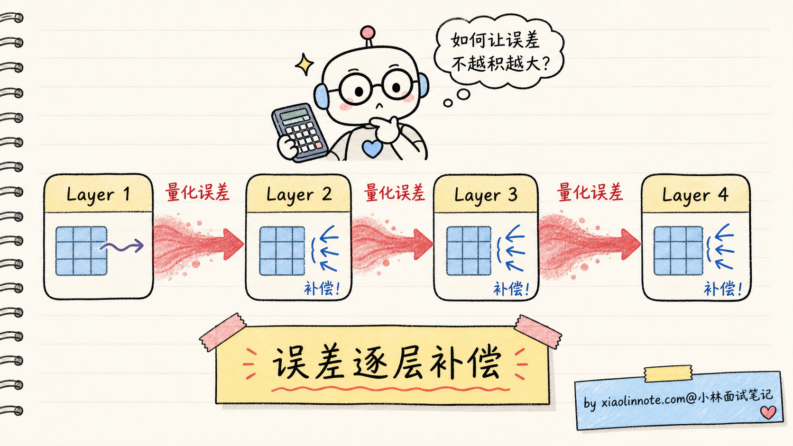
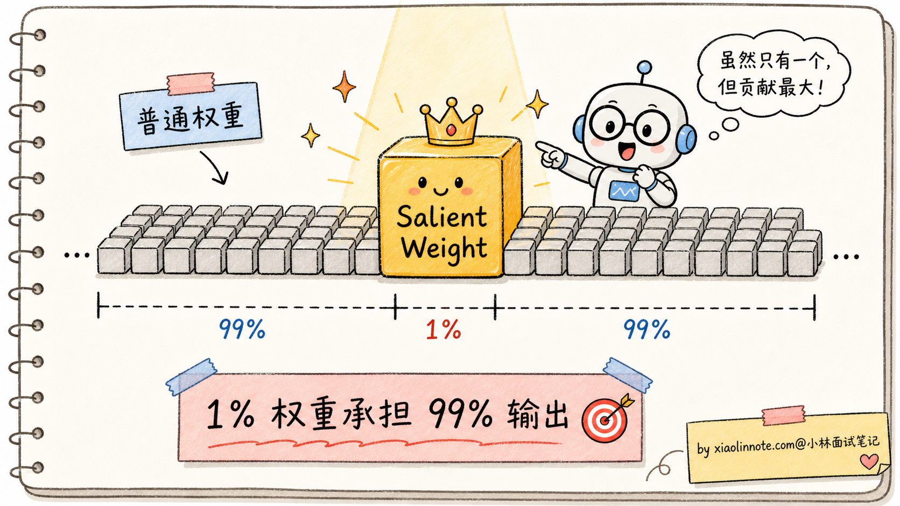
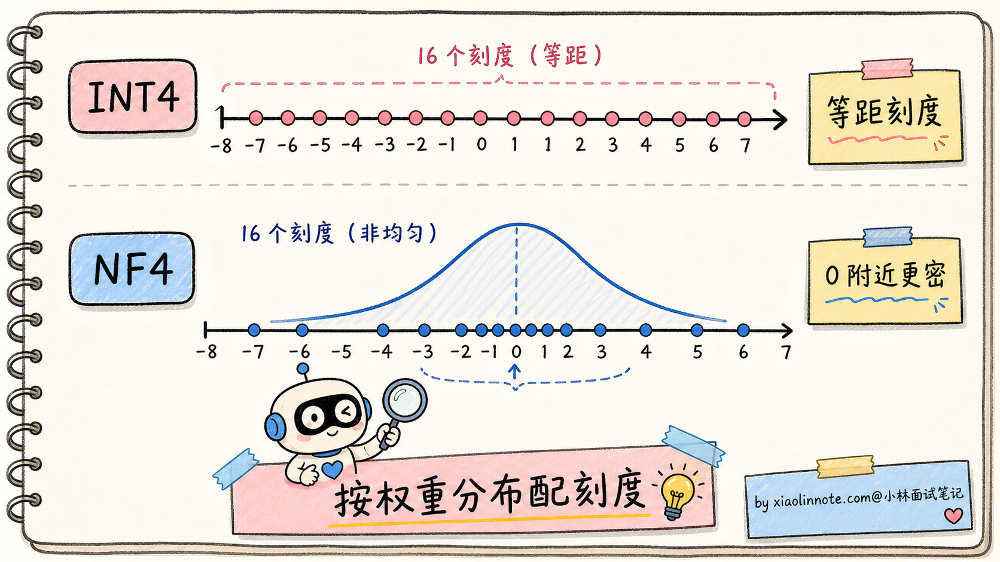
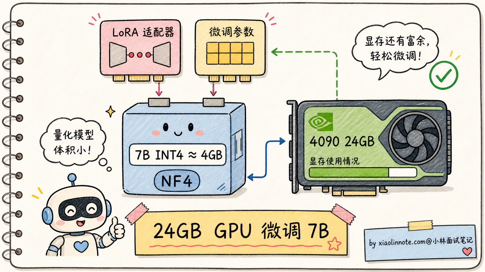
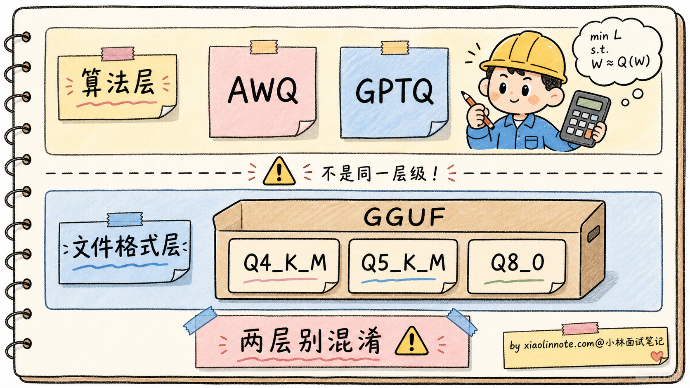
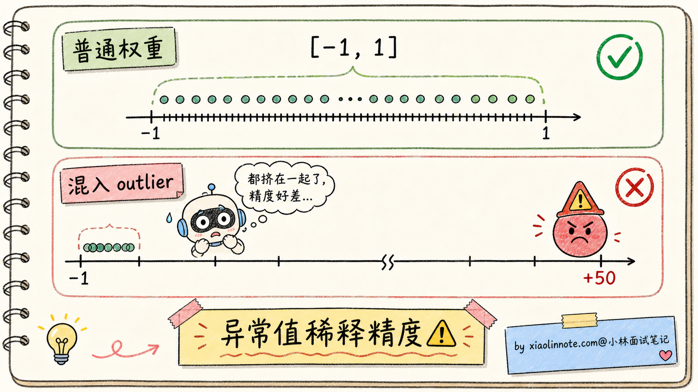

本篇目录
15. 大模型量化是什么？INT8/INT4/AWQ/GPTQ 怎么选？
👔面试官：来讲讲什么是大模型量化？INT8、INT4、AWQ、GPTQ 这些方案怎么选？
🙋♂️我：量化就是把模型参数从 32 位变成 8 位或 4 位，让模型变小、跑得更快。AWQ、GPTQ 都是常见的量化方法。
👔面试官：……「变小变快」是表面现象。深一点说，量化的核心做了什么事？为什么 16 位的 FP16 可以直接降到 4 位的 INT4 而效果还能用？精度去哪了？
🙋♂️我：哦哦，应该是把数值范围映射到更少的离散值上吧？
👔面试官：对，但「怎么映射」就是量化方案的核心差别。AWQ 和 GPTQ 各自怎么映射？为什么一个叫「激活感知」一个叫「误差补偿」？再说，QLoRA 用的是哪种量化？为什么 INT4 量化后的模型还能微调？
🙋♂️我：呃……我用过 GGUF 文件，不知道里面是 AWQ 还是 GPTQ。
👔面试官：GGUF 是文件格式，不是量化算法。量化算法和文件格式是两层东西，混淆这两层就是没真正搞清楚。回去补一下。
到这才搞明白，量化这道题不是「把 16 bit 砍成 4 bit」这种粗略说法。AWQ、GPTQ、GGUF 算法各自的差异、精度损失到底掉到哪一档可以接受、和 LoRA 怎么搭，这几个点说清楚才是面试要的答案。
💡 简要回答
我理解量化（Quantization）的本质是把模型参数从「高精度浮点数」（FP32 或 FP16）映射到「低精度整数」（INT8 或 INT4），用更少的比特表示同样的信息。
核心收益是显存和速度。一个 7B 模型 FP16 占 14GB，INT4 量化后只剩 4GB，显存压到 1/3.5；同时 INT4 计算比 FP16 快、访存压力也小，推理速度提升 2-4 倍。
主流量化方案分两个维度。
精度维度：FP16 -> INT8 -> INT4 -> 更激进的 NF4 / FP8 等。位数越少越省，但精度损失越大。INT4 是当前的甜蜜点，效果接近 FP16，体积只有 1/4。
算法维度：
- GPTQ（GPT Quantization）：基于「误差补偿」的逐层量化。每量化一层权重，用一小批校准数据测出量化误差，把误差补偿到下一层去。优点是数学严谨、支持 INT3 这种极端精度
- AWQ（Activation-aware Weight Quantization）：基于「激活感知」的权重保护。核心洞见是「不是所有权重都同样重要」，那些和激活值大的输入相关的权重要保护好，其他的可以激进压缩。优点是推理速度快、效果稳
- QLoRA 里的 NF4：NormalFloat 4-bit，专为权重的近高斯分布设计的非均匀量化，配合 LoRA 微调用，让 24GB 消费级显卡能微调 7B 模型
怎么选：
- 部署生产环境、看重推理速度：优先评估 AWQ / GPTQ / FP8 / 框架原生 INT4，具体看 vLLM、SGLang、TensorRT-LLM 当前版本支持哪种 kernel，不能简单说某个框架默认就是 AWQ
- 部署生产环境、追求最高精度：GPTQ INT4 或 FP16
- 个人微调、消费级 GPU：QLoRA NF4
- 极端压缩（边缘设备）：INT3 GPTQ 或 GGUF 的 Q4_K_M
实测精度损失要看模型、任务和校准数据。一般经验是：FP16 -> INT8 通常损失很小；INT4 是部署甜蜜点，但数学推理、长代码、长上下文任务可能明显掉点；INT3 / INT2 就要非常谨慎，通常只适合极端压缩或边缘场景。
最关键的认知是，量化算法（GPTQ/AWQ）和文件格式（GGUF/safetensors）是两层东西。GPTQ 和 AWQ 是「怎么把高精度变低精度」的算法，GGUF 是 llama.cpp 用的「怎么存这些低精度权重」的文件格式。两者经常被混淆，理清这层关系是答好这道题的基本功。
📝 详细解析
量化是什么？为什么大模型必须量化
要理解量化，先回到一个最基础的问题：模型参数本质是什么？
每个参数就是一个数字。在训练时，主流做法是用 FP32（32 位浮点） 或 FP16（16 位浮点） 来存储这些数字，因为浮点数能表达的数值范围广、精度高，对训练时的梯度计算友好。
但部署时，FP16 就显得很奢侈了。来算一下显存占用：
7B 模型 FP16: 7 × 10⁹ × 2 字节 = 14 GB
70B 模型 FP16: 70 × 10⁹ × 2 字节 = 140 GB一个 70B 模型光权重就要 140GB，加上推理时的 KV Cache、激活值、优化器状态，至少需要 4 张 A100 80GB 才能跑起来。
如果把 FP16（16 比特）降到 INT4（4 比特），存储占用直接砍到 1/4：
7B 模型 INT4: 7 × 10⁹ × 0.5 字节 = 3.5 GB
70B 模型 INT4: 70 × 10⁹ × 0.5 字节 = 35 GB7B 模型一张消费级 GPU（4090 24GB）就能跑得很轻松，70B 模型一张 A100 80GB 也够用了。这就是为什么大模型时代量化几乎是部署的标配。

显存只是一方面，量化还有第二个收益：推理速度。INT4 计算的硬件吞吐通常比 FP16 高 2-4 倍（取决于 GPU 是否有专门的 INT4 计算单元），而且访存量也是 1/4，对「access-bound」的推理过程是极大的加速。
但量化不是免费午餐。把 16 位的连续浮点数压到 4 位的 16 个离散整数级，必然会损失精度。整个量化算法的核心，就是回答一个问题：如何在最小的精度损失下，把高精度数压到低精度数？
量化的核心：映射连续到离散
要理解量化算法，得先搞清楚最基础的「映射」机制。
假设我们有一组 FP16 权重，数值范围在 [-2.5, 2.5] 之间，要把它们量化到 INT4（只有 16 个离散值，从 -8 到 7）。最朴素的做法叫线性量化：
缩放因子 scale = (max - min) / (2^bits - 1) = (2.5 - (-2.5)) / 15 ≈ 0.333
零点 zero_point = round(-min / scale) = round(2.5 / 0.333) ≈ 8
量化: int_val = round(fp_val / scale) + zero_point - 8
反量化: fp_val ≈ (int_val - zero_point + 8) × scale对于权重值 0.7，量化结果是 round(0.7 / 0.333) ≈ 2，反量化回来是 2 × 0.333 ≈ 0.666，精度损失 0.034。
这就是量化的基本套路。不同算法的差别，在于怎么算 scale 和 zero_point、怎么处理 outlier（异常大的权重值）、怎么补偿量化误差。

实际工程里，量化还分两种风格：
对称量化（Symmetric）：假设数值对称分布在 0 周围（min = -max），不需要 zero_point，公式更简单。适合权重这种通常对称分布的数。
非对称量化（Asymmetric）：数值不对称（比如 ReLU 之后的激活值都是正数），需要 zero_point 把范围对齐。适合激活值这种偏分布的数。

理解了基础映射机制，下面看不同位数下精度的实际表现。
INT8 / INT4 各自的精度边界
不同位数的量化，精度损失差别很大。来看实测数据：
| 量化位数 | 模型体积 | 平均精度损失 | 实用性 |
|---|---|---|---|
| FP16 | 14 GB（7B） | 基线 | 训练用 |
| INT8 | 7 GB | < 0.5% | 几乎无损 |
| INT4 | 3.5 GB | 1-3% | 主流部署 |
| INT3 | 2.6 GB | 5-10% | 边缘设备 |
| INT2 | 1.75 GB | 20%+ | 一般不用 |
INT8 量化经常被叫做「接近免费的午餐」。FP16 -> INT8 在很多模型和任务上的损失很小，肉眼几乎看不出差别。但这里不要说成绝对无损，涉及数学、代码、长上下文、工具调用时，还是要在自己的业务集上评测。
INT4 是当前很流行的甜蜜点。损失 1-3% 这个说法只能当粗略经验，在大多数通用任务里可接受，体积压到 FP16 的 1/4，推理还能加速。vLLM、SGLang、llama.cpp 等推理框架都支持多种 INT4 / GGUF / GPTQ / AWQ / FP8 方案，但默认通常还是不量化，是否量化要由用户显式选择。
INT3、INT2 开始严重退化。损失曲线不是线性的，是「先平后陡」的曲线：从 INT8 到 INT4 损失增加不大，但从 INT4 到 INT3 突然增加很多，再到 INT2 模型基本就不能用了。

但「平均精度损失 1-3%」这个数字背后藏着一个魔鬼：精度损失不是均匀分布的。某些类型的任务（特别是数学推理、长链路逻辑）对量化误差特别敏感，可能损失 10%+；另一些任务（简单分类、文本生成）几乎无损。这是为什么后来出现了 GPTQ 和 AWQ 这种更精细的量化算法。
GPTQ：基于误差补偿的逐层量化
GPTQ（GPT Quantization）是 2022 年 IST Austria 提出的算法，核心思路是「逐层量化 + 误差补偿」。
朴素量化的问题是：每层独立量化，量化误差会逐层累积，模型最终输出偏离原模型很远。GPTQ 的洞见是，量化误差可以被「补偿」到后面的权重里。
具体流程：
- 准备一小批校准数据（典型 128 条文本，几万 tokens）
- 让模型用 FP16 跑一遍校准数据，记录每层的输入激活值
- 从第一层开始，逐层做量化：
- 用 Hessian 矩阵估计每个权重的「重要性」（敏感度）
- 量化重要性低的权重时损失最小
- 量化产生的误差，反向修正后面还没量化的权重
- 一层量化完，进入下一层，重复

GPTQ 的优点：
- 数学严谨：基于 Optimal Brain Surgeon 的二阶优化理论
- 支持极端低位：能做到 INT3 甚至 INT2，靠的就是误差补偿能消化大部分精度损失
- 不依赖模型结构：纯权重量化，对 Transformer 通用
GPTQ 的缺点：
- 量化耗时长：7B 模型量化要几个小时（要算 Hessian、要逐层补偿）
- 校准数据有依赖：选错校准数据，量化效果会变差
- 激活值还是 FP16：GPTQ 只量化权重，激活值依然是高精度，所以推理时混合精度计算，速度提升不如 AWQ
GPTQ 主要用在追求精度的离线量化场景。Hugging Face 的 AutoGPTQ、Optimum 都集成了它，是开源社区最早期普及的量化方案。
AWQ：激活感知的权重保护
AWQ（Activation-aware Weight Quantization）是 2023 年 MIT 提出的算法，核心洞见特别巧妙。
研究者们观察到一个现象：模型里大约 1% 的权重承担了 99% 的输出贡献，他们把这些权重叫 Salient Weights（显著权重）。如果把这 1% 的权重保护好（保持高精度），其他 99% 激进量化到 INT4，模型效果几乎不掉。
但问题是，怎么找到这 1% 的关键权重？AWQ 的方法是看「激活值的大小」。
直觉是这样的：权重 W 的输出贡献 = W × 激活值 X。如果某些输入位置的 X 特别大（比如 attention 中某些 token 的激活值是其他位置的 100 倍），那么对应的权重列就是「重要权重」，量化时要小心保护。

具体技术上，AWQ 通过一个逐通道缩放操作，把重要权重通道的数值扩大（这样量化时它们占据更宽的整数范围，损失更小），不重要的不动。这个缩放是数学等价变换，不改变模型输出，只是让量化更友好。
AWQ 的优点：
- 推理速度快：因为针对 GPU 计算特性优化，量化后的权重布局对 GPU 内核友好，推理速度比 GPTQ 快 1.5-2 倍
- 效果稳：在 INT4 量化下，AWQ 的精度损失比 GPTQ 略好（约 0.5-1% 的差距）
- 量化耗时短：不用算 Hessian，量化一个 7B 模型只要几十分钟
AWQ 的缺点：
- 极端低位（INT3）效果不如 GPTQ：GPTQ 的误差补偿在极端位数下更稳
- 需要校准数据：和 GPTQ 一样，量化前要跑一批校准
实践中，AWQ 是很常见的生产部署选择之一，因为它在「精度 + 速度 + 量化耗时」三个维度比较均衡。但现在框架支持的量化路线越来越多，比如 GPTQ、bitsandbytes、FP8、Marlin / CUTLASS kernel、GGUF 等，选型时一定要看目标框架和目标 GPU 上哪条路径最成熟。
QLoRA 与 NF4：让消费级 GPU 微调成为可能
GPTQ 和 AWQ 主要解决「部署时」的量化问题。但还有一个更激进的需求：能不能让 4-bit 量化的模型还能继续微调？
这就是 QLoRA（Quantized LoRA）要回答的问题。2023 年华盛顿大学的研究者发表论文，提出 NF4（NormalFloat 4-bit）量化方案，配合 LoRA 微调，实现了「24GB 消费级 GPU 微调 7B 模型」这一惊人成就。
NF4 是一种非均匀量化。普通 INT4 是均匀分隔（16 个值平均分布），NF4 利用了一个事实：模型权重的分布近似于均值为 0 的正态分布。

NF4 把 16 个量化值的分布也设计成正态分布形状，让密集区域（0 附近）有更多刻度、稀疏区域（远离 0）刻度少。这样量化误差更小。
QLoRA 在 NF4 基础上还加了两个优化：
1. 双重量化（Double Quantization）：连量化用的 scale 常数也再量化一次，进一步省显存
2. 分页优化器（Paged Optimizer）：用 NVIDIA 统一内存，把优化器状态溢出到 CPU 内存，避免显存峰值溢出
最终的效果：在一张 24GB 4090 上，可以微调 7B 模型，甚至能微调 13B、33B（用 48GB 卡）。这一下让大模型微调民主化了，无数个人开发者用 QLoRA 训出了自己的领域模型。

QLoRA 是量化与微调结合的典型案例，也证明了「INT4 量化的模型不是死模型，还能继续学习」。
怎么选量化方案
讲到这里，五种方案（FP16、INT8、AWQ、GPTQ、QLoRA NF4）都梳理完了。实际选型怎么看？
| 场景 | 推荐方案 | 理由 |
|---|---|---|
| 生产部署，看重推理速度 | AWQ / GPTQ / FP8 / 框架原生 INT4 | 看目标框架和 GPU kernel 支持，不能只背一个名字 |
| 生产部署，追求最高精度 | FP16 / GPTQ INT4 | 精度无妥协；如果显存吃紧再用 GPTQ |
| 个人微调，消费级 GPU | QLoRA NF4 | 让 4090 也能微调 7B-13B |
| 边缘部署（手机/笔记本） | GGUF Q4_K_M / INT3 GPTQ | 极致压缩 |
| 批量推理，CPU 部署 | llama.cpp + GGUF | 无 GPU 也能跑 |
几个关键提示：
1. AWQ vs GPTQ 怎么选？ 大多数线上部署可以先试 AWQ 或框架推荐的 INT4 路线，因为推理 kernel 和量化耗时通常更友好。GPTQ 在追求精度、已有 GPTQ 权重、或者特定校准数据更匹配时也很常见。不要脱离框架支持谈算法好坏，最后跑得快不快，取决于量化格式和推理 kernel 是否匹配。
2. INT4 vs INT8 怎么选？ 显存够、质量要求高，就优先试 INT8 / FP8 或直接 FP16；显存不够、吞吐敏感，再上 INT4。如果是 70B 这种大模型，INT4 经常是性价比最高的选择，但不是唯一选择，具体还要看硬件、并发和上下文长度。
3. GGUF 是什么？ 它不是量化算法，是 llama.cpp 用的文件格式。GGUF 内部可以存各种量化方案的权重（Q4_K_M、Q5_K_M、Q8_0 等），是一个容器。这跟 AWQ/GPTQ 是「算法」不是一个层级。

量化的副作用与陷阱
量化看起来很美，但有几个常见的陷阱要警惕，否则上线后会被用户骂。
1. Outlier（异常值）问题
模型权重里偶尔会出现一些「极端大」的值（绝对值是其他权重的几十倍），这些 outlier 会把量化范围拉得很宽，导致大部分普通权重的量化精度被严重稀释。
应对：AWQ 的「逐通道缩放」是专门处理这个的。GPTQ 的 Hessian-based 也能识别出 outlier 优先保护。但极端情况下还是会出错。

2. KV Cache 量化的挑战
权重量化（FP16 -> INT4）现在很成熟了，但 KV Cache 量化（FP16 -> INT8/INT4）才刚起步。KV Cache 在长上下文下的占用比权重还大，量化它能省更多显存，但精度损失对长链路推理特别敏感（比如数学推理、代码生成）。这是 2024-2026 年量化方向的研究热点。
3. 不同任务的精度敏感度差异巨大
「INT4 量化精度损失 1-3%」是平均值。具体到某个任务可能差很多：
- 简单分类、抽取：几乎无损
- 通用对话：损失 1-2%
- 数学推理：损失 5-10%
- 长链路代码生成：损失 10%+
所以部署量化模型前必须在自己的业务场景下做评测，不能直接看论文里的平均数。
4. 和其他优化的兼容性
量化要和 Flash Attention、KV Cache、Speculative Decoding 等其他推理优化同时使用，不同框架的支持度不一样。AWQ、GPTQ、FP8、GGUF 在不同框架里的成熟度和性能差异很大。选量化方案前先看你的部署框架支持哪些，再用自己的业务集压测质量和吞吐。
🎯 面试总结
回到开头那段对话，问到大模型量化，最重要的是先把量化的本质讲清楚：把高精度浮点（FP16）映射到低精度整数（INT8/INT4），用更少的比特表示同样的信息，核心机制是「scale + zero_point 的线性映射」。收益是显存压到 1/4、推理快 2-4 倍，这是为什么所有大模型部署几乎都开量化。
接下来讲精度边界。INT8 通常损失很小，INT4 是甜蜜点但要看任务，INT3 开始明显冒险，INT2 一般不推荐。这种「位数越低损失越大但不是线性，而且不同任务敏感度不同」的认知能讲出来，比单纯说「量化会有精度损失」深刻得多。
然后把 GPTQ、AWQ、QLoRA NF4 这三个主流算法的核心思路讲清。GPTQ 是「逐层量化 + 误差补偿」，数学严谨支持极端低位；AWQ 是「激活感知 + 重要权重保护」（1% 关键权重承担 99% 输出贡献），推理速度快；QLoRA NF4 是非均匀量化 + LoRA 微调，让消费级 GPU 能微调大模型。能用一两句话点出每个算法的核心创新，就比纯背名字要强很多。
最关键的是选型经验：生产部署先看框架和 GPU kernel 支持，再在 AWQ、GPTQ、FP8、INT4 里压测；追求精度选 FP16 / INT8 / FP8；个人微调选 QLoRA NF4；边缘设备选 GGUF。还要特别明确指出 GGUF 是文件格式，不是量化算法，避免和 AWQ/GPTQ 混淆。这一句能讲出来，面试官就知道你真的在工程上做过量化，不是只看过论文。
如果还想再加分，可以提一句量化的常见陷阱（outlier 会破坏精度、KV Cache 量化是研究热点、不同任务的精度敏感度差异巨大、业务上量化前必须自己评测），让面试官知道你不是在背工具，是真的踩过量化的坑。
对了，大模型面试题会在「公众号@小林面试笔记题」持续更新，林友们赶紧关注起来，别错过最新干货哦！